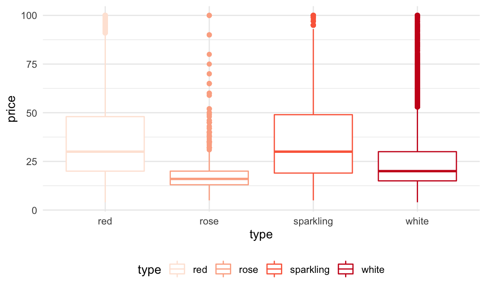
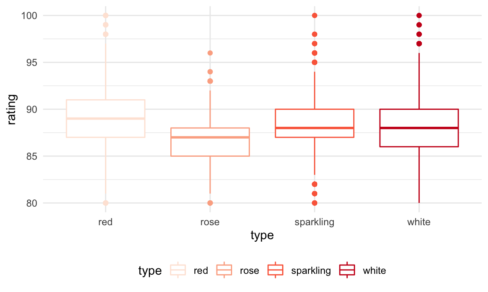
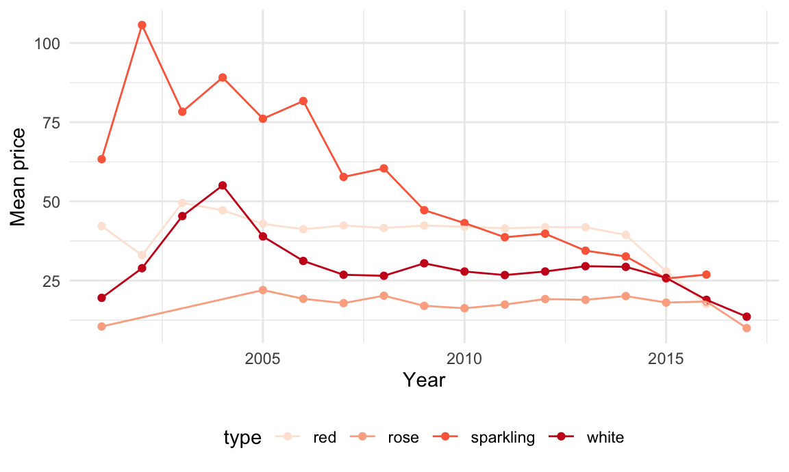
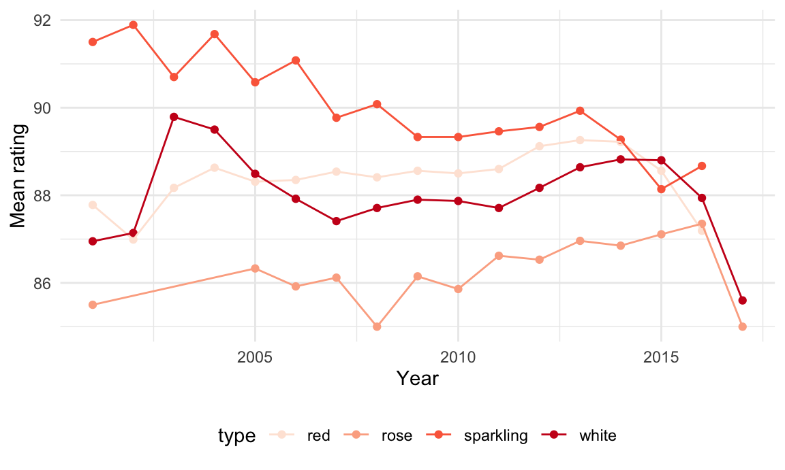
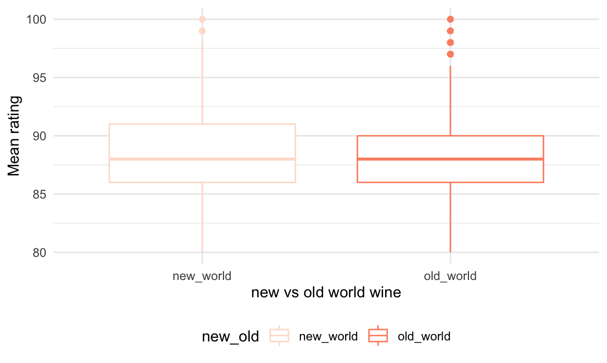
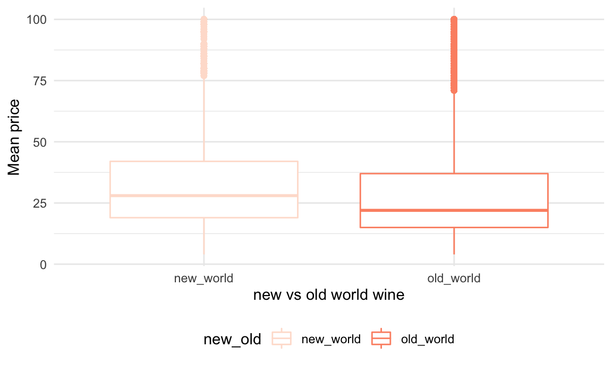

First plot the distribution of wine prices across four different wine types: red, rose, sparkling, white. We saw the four distributions are all very right skewed since we have many very pricy wine. Therefore, we choose to only look at price under $100.
wine_df %>%
filter(!is.na(type),
price <= 100) %>%
ggplot(aes(x = type, y = price, color = type)) +
geom_boxplot()
It is interesting to see that red and sparking wine have similar distribution with mean price around $27. The prices of rose are lower than the other three types and are mostly round $10~$20.
The results is significant which means that we can conclude that at least one wine type’s price is different from the others.
wine_price =
wine_df %>%
filter(price <= 100)
res.aov <- aov(price ~ type, data = wine_price)
summary(res.aov)## Df Sum Sq Mean Sq F value Pr(>F)
## type 3 2948351 982784 2791 <2e-16 ***
## Residuals 106267 37418807 352
## ---
## Signif. codes: 0 '***' 0.001 '**' 0.01 '*' 0.05 '.' 0.1 ' ' 1
## 11338 observations deleted due to missingnessPlot the distribution of wine ratings across four different wine types: red, rose, sparkling, white. We can see that red wine has higher ratings than the other tree types. Rose has the lowest.
wine_df %>%
filter(!is.na(type)) %>%
rename(rating = points) %>%
ggplot(aes(x = type, y = rating, color = type)) +
geom_boxplot()
The results is significant which means that we can conclude that at least one wine type’s rating is different from the others. Customers could guess the ratings of a wine based on its type since they are significant different from each other. From the boxplot, we could tell the customers that normally red wine will be rated higher.
res.aov <- aov(points ~ type, data = wine_df)
summary(res.aov)## Df Sum Sq Mean Sq F value Pr(>F)
## type 3 16593 5531 597.3 <2e-16 ***
## Residuals 117650 1089353 9
## ---
## Signif. codes: 0 '***' 0.001 '**' 0.01 '*' 0.05 '.' 0.1 ' ' 1
## 12317 observations deleted due to missingnessSwitzerland has the highest mean price of wine at $85. England is the second highest and Germany is the third.
y <- list(
title = "Mean Price"
)
wine_df %>%
filter(!is.na(price)) %>%
group_by(country) %>%
summarise(mean = mean(price)) %>%
mutate(country = fct_reorder(country, mean),
mean = round(mean, 2),
text_label=str_c("Country:", country, "\nmean price:", mean)) %>%
plot_ly(
x = ~country, y = ~mean, color = ~country, text = ~text_label,
type = "bar", colors = "viridis") %>%
layout(yaxis = y)England has the highest average rating. Indis and Austria are the second and third highest. Even though Switzerland has the highest priced wine, the average ratings is only ranked at 11. Wine in Switzerland is not very recommended.
y <- list(
title = "Mean rating"
)
wine_df %>%
filter(!is.na(points)) %>%
group_by(country) %>%
summarise(mean = mean(points)) %>%
mutate(country = fct_reorder(country, mean),
avg_rating = round(mean, 2),
text_label=str_c("Country:", country, "\nmean rating:", mean)) %>%
plot_ly(
x = ~country, y = ~avg_rating, color = ~country, text = ~text_label,
type = "bar", colors = "viridis") %>%
layout(yaxis = list(range = c(80,95)))We can see a trend that wines that are older are more expensive. Among the wine that were produced before 2010, Sparkling wine have the highest prices among all types but the prices decreases with the year closer to present. Among the wine that were produced after 2010, red wines are the most expensive. 2002 is a good year for sparling wine and 2004 is a good year for white wine.
wine_df %>%
filter(!is.na(price),
!is.na(type),
year > 2000) %>%
group_by(year,type) %>%
summarise(mean = mean(price)) %>%
mutate(mean = round(mean, 2)) %>%
ggplot(aes(x = year, y = mean, color = type))+
geom_point()+
geom_line() +
labs(y = "Mean price",
x = "Year")
We can see a trend that sparkling wines that are older have higher ratings. For other types of wine, the ratings are stable. Therefore, the age of the wine does not affect the rating much for red, rose and white wines. Among the wine that were produced before 2010, Sparkling wine have the highest ratings among all types but the ratings decreases with the year closer to present.
wine_df %>%
filter(!is.na(points),
!is.na(type),
year > 2000) %>%
group_by(year,type) %>%
summarise(mean = mean(points)) %>%
mutate(mean = round(mean, 2)) %>%
ggplot(aes(x = year, y = mean, color = type))+
geom_point()+
geom_line() +
labs(y = "Mean rating",
x = "Year")
Anne Krebiehl MW gives the highest mean ratings. Alexander Peartree gives the lowest mean ratings.
y <- list(
title = "Mean ratings"
)
wine_df %>%
filter(!is.na(points)) %>%
group_by(taster_name) %>%
summarise(mean = mean(points)) %>%
mutate(taster_name = fct_reorder(taster_name, mean),
mean = round(mean, 2),
text_label=str_c("Taster:", taster_name, "\nmean rating:", mean)) %>%
plot_ly(
x = ~taster_name, y = ~mean, color = ~taster_name, text = ~text_label,
type = "bar", colors = "viridis") %>%
layout(yaxis = list(range = c(80,95)))We want to know the tasters that rated wines with price greater than $800.Most of the most expensive wine are rated by Roger Voss.
wine_df %>%
filter(price >= 800,
!is.na(taster_name)) %>%
group_by(taster_name) %>%
summarise(number_of_wine = n()) %>%
arrange(desc(number_of_wine)) %>%
knitr::kable()| taster_name | number_of_wine |
|---|---|
| Roger Voss | 24 |
| Joe Czerwinski | 3 |
| Anne Krebiehl MW | 1 |
| Kerin O’Keefe | 1 |
| Matt Kettmann | 1 |
Roger Voss rated the most number of wine at WineEthusiast Magazine.
wine_df %>%
filter(!is.na(taster_name)) %>%
group_by(taster_name) %>%
summarise(number_of_wine = n()) %>%
arrange(desc(number_of_wine)) %>%
knitr::kable()| taster_name | number_of_wine |
|---|---|
| Roger Voss | 25514 |
| Michael Schachner | 15134 |
| Kerin O’Keefe | 10776 |
| Virginie Boone | 9537 |
| Paul Gregutt | 9532 |
| Matt Kettmann | 6332 |
| Joe Czerwinski | 5147 |
| Sean P. Sullivan | 4966 |
| Anna Lee C. Iijima | 4415 |
| Jim Gordon | 4177 |
| Anne Krebiehl MW | 3685 |
| Lauren Buzzeo | 1835 |
| Susan Kostrzewa | 1085 |
| Mike DeSimone | 514 |
| Jeff Jenssen | 491 |
| Alexander Peartree | 415 |
| Carrie Dykes | 139 |
| Fiona Adams | 27 |
| Christina Pickard | 6 |
Araujo in the US has the highest average rating of 98. Among the top 10 wineries, four of them are in the US and four of them are in the France.
wine_df %>%
filter(!is.na(winery)) %>%
group_by(winery,country) %>%
summarise(mean = mean(points)) %>%
arrange(desc(mean)) %>%
head(n = 10) %>%
knitr::kable()| winery | country | mean |
|---|---|---|
| Araujo | US | 98.00000 |
| Gandona | US | 97.00000 |
| J.L. Chave | France | 97.00000 |
| Ovid | US | 97.00000 |
| Standish | Australia | 97.00000 |
| Salon | France | 96.80000 |
| Tenuta dell’Ornellaia | Italy | 96.70000 |
| Château Pétrus | France | 96.66667 |
| Barons de Rothschild | France | 96.00000 |
| Bryant Family | US | 96.00000 |
wine_df %>%
mutate(new_old = ifelse(new_world == 0, "old_world", "new_world")) %>%
rename(rating = points) %>%
ggplot(aes(x = new_old, y = rating, color =new_old)) +
geom_boxplot() +
labs(y = "Mean rating",
x = "new vs old world wine")
The results is insignificant which means that we can conclude that ratings for new world or old world wine are not different from the others.
wine_new_old=
wine_df %>%
mutate(new_old = ifelse(new_world == 0, "old_world", "new_world"))
t.test(price ~ new_old, data = wine_new_old)##
## Welch Two Sample t-test
##
## data: price by new_old
## t = -0.041754, df = 86937, p-value = 0.9667
## alternative hypothesis: true difference in means is not equal to 0
## 95 percent confidence interval:
## -0.4846275 0.4644101
## sample estimates:
## mean in group new_world mean in group old_world
## 35.35856 35.36867wine_df %>%
mutate(new_old = ifelse(new_world == 0, "old_world", "new_world")) %>%
filter(price <= 100) %>%
ggplot(aes(x = new_old, y = price, color =new_old)) +
geom_boxplot() +
labs(y = "Mean price",
x = "new vs old world wine")
The results is significant which means that we can conclude that prices of new world or old world wine are significantly different from the others.
wine_price =
wine_df %>%
mutate(new_old = ifelse(new_world == 0, "old_world", "new_world")) %>%
filter(price<=100)
t.test(price ~ new_old, data = wine_price)##
## Welch Two Sample t-test
##
## data: price by new_old
## t = 35.395, df = 114502, p-value < 2.2e-16
## alternative hypothesis: true difference in means is not equal to 0
## 95 percent confidence interval:
## 3.741382 4.180033
## sample estimates:
## mean in group new_world mean in group old_world
## 32.95841 28.99770